Новые механики и что чем стало
Удача → внимательность и условия дня
- Внимательность — показатель удачи персонажа называется «Внимательность»: еда и снаряжение дают «+Внимательность», числа и влияние на игру те же
- Прогноз клева и находок — вместо гадалки на ТВ — утренняя передача Велвик: насколько день хорош для рыбалки, поисков и раскопок (погода, давление, прилив)
- Снаряжение вместо колец — эффект вещи объяснен ее устройством: фонарик светит, магнитный браслет притягивает, кастет бьет сильнее; категория «Кольцо» стала «Снаряжение», обручальное кольцо осталось кольцом
- Карманный барометр — вместо Особого оберега: с ним лучше выбираешь время для рыбалки и поисков
- Подарочный сейф клуба — вместо Статуи бесконечной удачи: каждое утро курьеры клуба кладут подарок
- Казино — те же игры и ставки, но без слова «удача»
Поездки вместо телепортов
- Талоны на транспорт — вместо тотемов: вызов транспорта, поездка, как и раньше, мгновенная
- Вертолетные площадки — вместо обелисков; мини-обелиск — станция вагонетки; «Попугай-экспресс» — канатная дорога; жезл возвращения — рация
- Свисток для лошади — лошадь прибегает на свист
- Дымовая бомба в «Короле прерий» — больше не переносит героя: дым вокруг него, противники теряют его из виду, 4 секунды пули не берут
Обряды и статуи → люди и устройства (статуи ничего не дают)
- Ящик утренней доставки — вместо Статуи благословений: утром в нем полезная мелочь — крепкий кофе, энергетик, лупа, свежая наживка, выпечка, точильный камень
- Пульт безопасности шахты — вместо Алтаря испытания: выключить крепь и вентиляцию — на глубине опаснее
- Копилка курсов переподготовки — вместо Статуи неуверенности: 10 000 з., ночью заочный курс, утром — новая профессия
- Старая контора — вместо темных алтарей в хижине: запись детей в пансион, «Бюро примирения» для бывших супругов, «Приманка» — Странная булочка
- Ракета засева облаков и Разовый металлоискатель — вместо тотемов дождя и сокровищ
- Тайник старателей — вместо Трех столбов: радужный осколок — ключ, в нише — метеоритный меч
- Тайник в приборе ученого — вместо лесного пилона
- Направление в приют — вместо пыльцы бабочки: питомец уезжает в приют Марни, без бабочки
- Подарок соседей — каменная сова, что появляется ночью, — садовая фигура, которую кто-то тайком поставил
- Черная гранитная стела — вместо декоративного обелиска — старый межевой камень
Существа → звери, машины и люди
- Жабы-древолазы — вместо слаймов: икра, инкубатор, пресс, террариум; перчатки от яда вместо кольца
- Старые дроны рудника — вместо призраков, летающих черепов и змеев; дроны-медузы — вместо кальмаров
- Старые автоматы — вместо скелетов и мумий; «Автомат в обмотке» после удара перезагружается и встает
- Горные роботы и машины — вместо големов; Перечный динозавр — огнеметная машина, Лавовый скрытень — лавовая турель
- Банда подземного клана — вместо теней: люди в темной одежде, при поражении бросают дымовую шашку и бегут
- Варан и мараны — динозавр на ферме — варан; «пустотные» куры — порода маран, черный лосось
- Детали дронов — вместо эктоплазмы и эссенций — фотоэлемент, угольный конденсатор и другие детали
- Агродрон кооператива — вместо феи урожая
- Зеленый дождь — ветер приносит тучу пыльцы и спор мха — все быстро идет в рост
Персонажи
- Расмодиус — изобретатель — вместо волшебника: мастерская механика, каталог заказов, дешифратор сигналов роботов
- Отшельница на парамоторе — вместо ведьмы: ночью пролетает над фермой и оставляет в курятнике яйцо марана
- Кробус — человек подземного клана в защитном костюме; дварф — старый шахтер Крот, язык дварфов — шифр артели
- Кооп-боты — вместо джунимо: ремонтная бригада роботов старого кооператива, наборы — заявки, хижина — ангар сборщиков; машины не прыгают
- Люди вместо говорящих зверей — Медведь — лесник в медвежьей шубе, Гурман — повар, медведь у мусорки — уличный музыкант, попугаи острова — бригада строителей «Попугаи» с дронами
- Певица-ныряльщица — вместо русалки; кулон — «Морской кулон»
- Письмо деда — оценку фермы зачитывает нотариус, призрака нет
- Психолог — вместо гадалки на Ярмарке: говорит, к чему ведут ваши привычки и дружбы
- Эмили и Абигейл — Эмили любит камни и шитье, Абигейл — коротковолновое радио и заброшенные места
- Мистер Ки — эксцентричный богач, без неземного
Места, праздники, вещи
- Шахта Калико — вместо Пещеры Черепа
- Тыквенная ночь — вместо Кануна духов: ярмарка урожая с кукурузным лабиринтом, в клетках — звери
- Пир Зимней звезды — светский праздник; на экране итогов вместо саней Санты — агродрон с подарком
- Звездная капля — флакон редких укрепляющих капель
- Метеоритное железо — оружие Галактики и Бесконечности — метеоритные мечи, кинжалы, молоты
- Доработки у кузнеца — вместо чар; Волшебный порошок — «Катализатор»
- Мини-игры — «Король прерий» — вестерн против бандитов и зверей; Junimo Kart — «Гонки кооп-ботов»; «Хроники Соляриона» — экспедиция за кладом в старый рудник
- Фильмы и книги — без фантастики: «Росток» — научный мультфильм, «Мистериум» — шоу иллюзионистов
- Звуки — у машин — их собственный звук через робот-фильтр, у банды — без голоса
- Слова — в речи нет магии, удачи, религии, загробного и чувств у неживого: лес не «любит», солнце не «сердится»
Персонажи
→
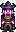
→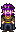
Волшебник → Расмодиус, изобретатель
Волшебник → изобретатель-механик: рабочая куртка, шляпа, очки; башня — мастерская
→
→
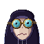
→
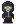
Кробус → Кробус
Тень из канализации → человек подземного клана в защитном костюме и очках
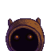
→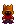
→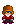
Дварф → Крот
Дварф → старый шахтер Крот в очках ночного видения
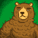
→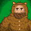
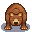
→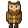
Медведь → Медведь (лесник)
Говорящий медведь → лесник по прозвищу Медведь, в медвежьей шубе
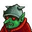
→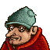
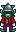
→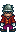
Гоблин-приспешник → Сторож
Гоблин-приспешник → сторож отшельницы
→
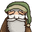
Дедушка (призрак) → Дедушка
Призрак деда → дед на портрете; оценку зачитывает нотариус
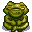
→Гурман (лягушка) → Гурман (повар)
Лягушка-гурман → повар-отшельник в пещере на острове
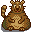
→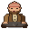
Медведь у мусорки → Уличный музыкант
Медведь у мусорки → уличный музыкант
→
Джунимо → Кооп-бот
Джунимо → кооп-боты, роботы старого кооператива; не прыгают
→
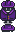
→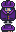
Кробус в плаще → Кробус в плаще
Кробус в кино — маскировка: шляпа и плащ, лицо человека
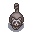
→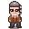
Енот → Енот (старьевщик)
Говорящий енот → старьевщик по прозвищу Енот: «енотовая» шапка с полосатым хвостом, темные очки, седая борода
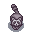
→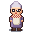
Енотиха → Енотиха (бабушка)
Енотиха → бабушка в очках, шали и фартуке; енотята у пня — их внуки в енотовых шапках
Предметы 126
→
«Дары осени» → «Дары осени»
Autumn's Bounty → Autumn's Bounty
Попробуй осень на вкус. Сытная еда — легче держать удар.
было: Попробуй осень на вкус.
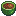
→«Объеденье» → «Объеденье»
Stuffing → Stuffing
Ах, запах свежего хлеба и шалфея. Сытно — легче держать удар.
было: Ах, запах свежего хлеба и шалфея.
→
Эликсир жизни → Аптечка
Life Elixir → First-Aid Kit
Полностью восстанавливает здоровье.
→
Арктический осколок → Арктический осколок
Arctic Shard → Arctic Shard
Этот осколок отливает холодным голубым светом.
было: Этот осколок испускает внеземное голубое свечение.
→
Баклажаны с пармезаном → Баклажаны с пармезаном
Eggplant Parmesan → Eggplant Parmesan
Терпкие, сырные, восхитительные. Сытно: на полный желудок легче держать удар.
было: Терпкие, сырные, чудесные.
→
Банановый пудинг → Банановый пудинг
Banana Pudding → Banana Pudding
Кремовый десерт с прекрасным тропическим вкусом. Сладкое бодрит, а сытный пудинг помогает держать удар.
было: Кремовый десерт с прекрасным тропическим вкусом.
Обед на удачу → Бодрящий обед
Lucky Lunch → Bracing Lunch
Сытно, но не клонит в сон — голова ясная.
было: Особое блюдо.
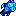
→Жуть-рыба → Бочкоглаз
Spook Fish → Barreleye
Огромные глаза улавливают размытые силуэты добычи.
Мумифицированная летучая мышь → Высохшая летучая мышь
Mummified Bat → Mummified Bat
Ее изящные крылья превосходно сохранились.
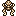
→Мумифицированная лягушка → Высохшая лягушка
Mummified Frog → Mummified Frog
Должно быть, эта древняя лягушка жила в густых кронах джунглей.
→
Высохшая морская звезда → Высохшая морская звезда
Dried Starfish → Dried Starfish
Морская звезда из древнего океана. На удивление хорошо сохранившийся экземпляр!
было: Морская звезда из первозданного океана. На удивление хорошо сохранившийся экземпляр!
→
Факел духов → Газовый факел
Spirit Torch → Gas Torch
Голубое пламя: горит газ.
было: Природа этого голубого свечения остается загадкой...
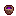
Громовое яйцо → Громовое яйцо
Thunder Egg → Thunder Egg
Образуется в толще застывшего вулканического пепла.
было: Согласно легенде, рассерженные духи грома кидались этими камнями друг в друга.
→
Доисторическое ребро → Древнее ребро
Prehistoric Rib → Ancient Rib
Маленькие засечки на нем предполагают, что это ребро было чьим-то обедом.
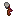
→Доисторический инструмент → Древний инструмент
Prehistoric Tool → Ancient Tool
Грубый копательный инструмент.
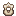
→Доисторический позвонок → Древний позвонок
Prehistoric Vertebra → Ancient Vertebra
Часть позвоночника какого-то древнего животного.
было: Часть позвоночника какого-то доисторического существа.
→
Доисторический топор → Древний ручной топор
Prehistoric Handaxe → Ancient Handaxe
Один из самых ранних инструментов человечества. Люди били камнем о камень, чтобы получить заостренный конец.
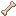
Доисторическая берцовая кость → Древняя берцовая кость
Prehistoric Tibia → Ancient Tibia
Толстая и прочная кость ноги.
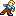
→Древняя кукла → Древняя кукла
Ancient Doll → Ancient Doll
Древняя кукла, покрытая грязью. Эта кукла могла быть игрушкой, украшением, или реквизитом для какого-нибудь старинного праздника.
было: Древняя кукла, покрытая грязью. Эта кукла могла быть игрушкой, украшением, или реквизитом к какому-нибудь ритуалу.
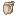
→Доисторическая скапула → Древняя лопатка
Prehistoric Scapula → Ancient Scapula
Известна в народе как просто «лопатка»... Точно не известно, какому виду она принадлежала.
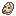
→Доисторический череп → Древняя челюсть
Prehistoric Skull → Ancient Jawbone
Определенно, она принадлежала млекопитающему.
было: Определенно, он принадлежал млекопитающему.
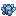
→Призрачный кристалл → Дымчатый кристалл
Ghost Crystal → Smoky Crystal
Этот кристалл всегда холодный на ощупь.
было: Вокруг этого кристалла холодная аура.
→
Жареный угорь → Жареный угорь
Fried Eel → Fried Eel
Жирный, но вкусный — и бодрит.
было: Жирный, но вкусный.
→
Загадочный камень → Загадочный камень
Mystic Stone → Mystery Stone
Разбейте, чтобы получить камни, руду или жеоды.
Замерзшая слеза → Замерзшая слеза
Frozen Tear → Frozen Tear
Кристалл, похожий на застывшую слезу.
было: Кристалл, по легенде являющийся замерзшей слезой йети.
→
Свиток дварфов I → Запись артели I
Dwarf Scroll I → Guild Record I
Пожелтевший пергаментный свиток с шифром старой артели. Он перевязан красным бантом.
было: Пожелтевший пергаментный свиток с надписями на языке дварфов. Он перевязан красным бантом.
Свиток дварфов II → Запись артели II
Dwarf Scroll II → Guild Record II
Пожелтевший пергаментный свиток с шифром старой артели. Он перевязан зеленой лентой.
было: Пожелтевший пергаментный свиток с надписями на языке дварфов. Он перевязан зеленой лентой.
Свиток дварфов III → Запись артели III
Dwarf Scroll III → Guild Record III
Пожелтевший пергаментный свиток с шифром старой артели. Он перевязан голубой веревочкой.
было: Пожелтевший пергаментный свиток с надписями на языке дварфов. Он перевязан голубой веревочкой.
→
Свиток дварфов IV → Запись артели IV
Dwarf Scroll IV → Guild Record IV
Пожелтевший пергаментный свиток с шифром старой артели. Он перевязан золотой цепочкой.
было: Пожелтевший пергаментный свиток с надписями на языке дварфов. Он перевязан золотой цепочкой.
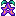
→Звездная капля → Звездная капля
Stardrop → Stardrop
Флакон редких укрепляющих капель. Курс железа и витаминов снимает скрытую усталость — сил становится больше.
было: Таинственный фрукт, который наделяет того, кто его съест, особыми силами. Его вкус похож на сон... Очень сильное личное переживание, которое сложно описать другим.
Звездные осколки → Звездные осколки
Star Shards → Star Shards
Образуются в глубоких жилах под огромным давлением. Под микроскопом видна на удивление правильная кристаллическая решетка.
было: Никому не известно, как они образуются. Некоторые ученые утверждают, что их микроскопическая структура неестественно регулярная.
→
Змеиный череп → Змеиная челюсть
Snake Skull → Snake Jaw
Сохранившаяся челюсть, когда-то принадлежавшая змее.
было: Сохранившийся череп, когда-то принадлежавший змее.
Золотое яйцо → Золотое яйцо
Golden Egg → Golden Egg
Крайне редкое и особенное яйцо с золотистой скорлупой.
было: Крайне редкое и особенное яйцо с твердой золотой скорлупой.
Золотой грецкий орех → Золотой грецкий орех
Golden Walnut → Golden Walnut
Бригада Попугаев с Имбирного острова берет оплату только такими орехами.
было: Любимейшее лакомство попугаев Имбирного острова.
→
Золотая маска → Золотой обруч
Golden Mask → Golden Circlet
Старинный золотой обруч. В гнездо надо лбом вставлен большой фиолетовый камень.
было: Жуткая золотая маска, которую, возможно, использовали в древнем магическом ритуале. В отверстие на лбу вставлен большой фиолетовый камень.
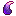
→Драконий зуб → Зуб ковша
Dragon Tooth → Bucket Tooth
Тяжелый зуб от ковша старого экскаватора. Наплавка из чистого иридия!
было: Говорят, что это зубы древних змеев. Их эмаль состоит из чистого иридия!
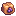
→Изюм → Изюм
Raisins → Raisins
Говорят, кооп-боты перегоняют его в биотопливо.
было: Говорят, это любимая еда Джунимо.
→
Яйцо зеленого слайма → Икра зеленого древолаза
Green Slime Egg → Green Dart Frog Spawn
Можно вырастить в инкубаторе икры.
было: Можно вырастить в инкубаторе слаймов.
→
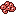
Яйцо красного слайма → Икра красного древолаза
Red Slime Egg → Red Dart Frog Spawn
Можно вырастить в инкубаторе икры.
было: Можно вырастить в инкубаторе слаймов.
→
Яйцо синего слайма → Икра синего древолаза
Blue Slime Egg → Blue Dart Frog Spawn
Можно вырастить в инкубаторе икры.
было: Можно вырастить в инкубаторе слаймов.
→
Яйцо тигрового слайма → Икра тигрового древолаза
Tiger Slime Egg → Tiger Dart Frog Spawn
Можно вырастить в инкубаторе икры. Но очень осторожно!
было: Можно вырастить в инкубаторе слаймов. Но очень осторожно!
→
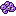
Яйцо фиолетового слайма → Икра фиолетового древолаза
Purple Slime Egg → Purple Dart Frog Spawn
Можно вырастить в инкубаторе икры.
было: Можно вырастить в инкубаторе слаймов.
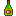
Имбирный эль → Имбирный эль
Ginger Ale → Ginger Ale
Пикантная газировка, известная своим успокаивающим действием на желудок. Имбирь бодрит.
было: Пикантная газировка, известная своим успокаивающим действием на желудок.
→
Дварфийская инструкция по безопасности → Инструкция по безопасности артели
Dwarvish Safety Manual → Guild Safety Manual
Бомбы наносят вам на 25% меньше урона.
Иридиевое молоко → Иридиевое молоко
Iridium Milk → Iridium Milk
Витаминная смесь мистера Ки в бутылке из-под молока. Прибавляет сил.
было: Придающее сил «молоко» неизвестного происхождения...
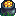
→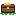
Камень → Камень
Stone → Stone
Разбейте, чтобы получить камни и немного угля.
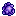
→Камень феи → Камень-конкреция
Fairy Stone → Concretion Stone
Округлый камень: слои минерала нарастают вокруг ядра.
было: Согласно старой шахтерской песне, эти камни образовались из костей древних фей.
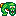
→Карп-мутант → Канализационный карп
Mutant Carp → Sewer Carp
Огромный карп из канализации: вырос на городских объедках.
было: Странная вода из канализации превратила этого карпа в чудовище.
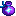
Волшебный порошок → Катализатор
Fairy Dust → Catalyst
Добавьте в любой аппарат — его работа ускорится, и продукция будет готова сразу.
было: Посыпьте им бочонки, плавильные печи и другое перерабатывающее оборудование, чтобы незамедлительно получить их продукцию.
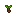
→Клубень таро → Клубень колоказии
Taro Tuber → Taro Tuber
Сажайте в теплую погоду. Вырастает через 10 дней. Растет быстрее вблизи водоема.
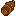
→Корень таро → Корень колоказии
Taro Root → Taro Root
Этот крахмалистый корень — одна из старейших агрокультур в мире.
Рука скелета → Кости кисти
Skeletal Hand → Hand Bones
Удивительно, как долго все маленькие кости сохранились вместе.
→
Костяная флейта → Костяная флейта
Bone Flute → Bone Flute
Древний духовой инструмент из кости животного. Он издает жуткий звук.
было: Доисторический духовой инструмент, сделанный из кости животного. Она издает жуткий звук.
→
Волшебный леденец → Кофейный леденец
Magic Rock Candy → Coffee Rock Candy
Крепкий кофеин и сахар: бодрит, как ничто другое.
было: Редкая и наполненная энергией конфета, настоянная на эссенции призматического осколка.
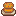
→Крабовые котлетки → Крабовые котлетки
Crab Cakes → Crab Cakes
Зажаренные до золотистой корочки котлетки из крабового мяса, хлебных крошек и яйца. Сытные — легче держать удар.
было: Зажаренные до золотистой корочки котлетки из крабового мяса, хлебных крошек и яйца.
→
Креветочный коктейль → Креветочный коктейль
Shrimp Cocktail → Shrimp Cocktail
Дорогостоящий аперитив из свежевыловленных креветок. Острый соус бодрит.
было: Дорогостоящий аперитив из свежевыловленных креветок.
→
Кроличья лапка → Кроличья лапка
Rabbit's Foot → Rabbit's Foot
Пушистая кроличья лапка на цепочке — брелок.
было: Говорят, она приносит удачу.
→
Кулон призрачной пустоты → Кулон клана
Void Ghost Pendant → Clan Pendant
Важное украшение подземного клана. Его дарят, когда хотят жить вместе как друзья.
было: Важное украшение теневого народа. Дарится при желании завязать отношения.
→
Лавовый угорь → Лавовый угорь
Lava Eel → Lava Eel
Живет в горячих ключах у лавовых озер.
было: Каким-то образом он выживает в раскаленной лаве.
→
Лемонстон → Лемонстон
Lemon Stone → Lemon Stone
Говорят, в измельченном виде он славится как деликатес у шахтеров артели.
было: Говорят, в измельченном виде он славится как дварфийский деликатес.
Динозавровый майонез → Майонез из яиц варана
Dinosaur Mayonnaise → Monitor Lizard Mayonnaise
Густой и кремообразный, с отчетливым зеленым оттенком. Пахнет травой и кожей.
→
Майонез пустоты → Майонез из яиц марана
Void Mayonnaise → Marans Mayonnaise
Густой темный майонез с насыщенным вкусом.
было: Густая черная паста с запахом жженых волос.
Манговый клейкий рис → Манговый клейкий рис
Mango Sticky Rice → Mango Sticky Rice
Сладкое манго и кокос превращают этот рис в особенное блюдо. Сытно — легче держать удар.
было: Сладкое манго и кокос превращают этот рис во что-то невероятное.
Мисс Морской черт → Мисс Удильщица
Ms. Angler → Ms. Angler
Приманивает жертву биолюминесцентным отростком.
→
Кулон Русалки → Морской кулон
Mermaid's Pendant → Sea Pendant
Отдайте его тому, с кем хотите заключить брак.
→
Пыльца бабочки → Направление в приют
Butterfly Powder → Shelter Referral
Направление от Марни: питомец навсегда переедет в приют и покинет вашу ферму. Это необратимо.
было: Посыпьте ею питомца, чтобы он пропал с вашей фермы. Это действие необратимо.
→
Окаменевший череп → Окаменевшая челюсть
Fossilized Skull → Fossilized Jaw
Просто прекрасный образец!
Окаменелая амфибия → Окаменелая амфибия
Amphibian Fossil → Amphibian Fossil
Относительно короткие задние конечности наводят на мысль, что это была какая-то древняя жаба.
было: Относительно короткие задние конечности наводят на мысль, что это была какая-то первобытная жаба.
→
Окаменелый слайм → Окаменелая икра
Petrified Slime → Petrified Frog Spawn
Этой лягушачьей икре около ста тысяч лет.
было: Этому малышу около ста тысяч лет.
→
Океаниум → Океаниум
Ocean Stone → Ocean Stone
По старой легенде, эти камни — мозаика древнего затонувшего города.
было: По старой легенде, эти камни — мозаики древних русалок.
Острый угорь → Острый угорь
Spicy Eel → Spicy Eel
Очень острый! Будьте осторожны: острое бодрит.
было: Очень острый! Будьте осторожны.
→
Монстрячий мускус → Пахучая приманка
Monster Musk → Scent Lure
Распылите ее, чтобы выманить побольше противников из укрытий.
было: Распылите его, чтобы выманить побольше монстров из укрытий.
—→—
Ящик для слайма → Переноска для древолаза
Slime Crate → Dart Frog Carrier
В ней можно перевезти ручного древолаза на новое место.
было: В нем можно перевезти одомашненного слайма на новое место.
Пещерное желе → Пещерное желе
Cave Jelly → Cave Jelly
Редкое желе из подземных озер. Сладкое — бодрит.
было: Редкое желе из подземных озер.
→
Пиратский медальон → Пиратский медальон
Pirate's Locket → Pirate's Locket
Старый пиратский памятный сувенир.
→
Полный завтрак → Полный завтрак
Complete Breakfast → Complete Breakfast
После такого можно свернуть горы!
было: После такого все по плечу!
Устройство дварфов → Прибор артели
Dwarf Gadget → Guild Gadget
Образец удивительной техники старой артели. Он до сих пор гудит и светится, но вы не понимаете, как он работает.
было: Один из экземпляров продвинутой технологии, известной когда-то дварфам. Оно до сих пор гудит и светится, но вы не понимаете, как оно работает.
Пятнистый криворот → Пятнистый криворот
Ghostfish → Spotted Wrymouth
Бледная слепая рыба из подземного озера.
→
Радиоактивный карп → Радиоактивный карп
Radioactive Carp → Radioactive Carp
Карп, который провел слишком много времени в радиоактивной жиже.
→
Радужное желе → Радужное желе
Prismatic Jelly → Prismatic Jelly
Добывается из редкого и неуловимого радужного древолаза.
было: Добывается из редкого и неуловимого Радужного слайма.
→
Радужный осколок → Радужный осколок
Prismatic Shard → Prismatic Shard
Редчайший самоцвет: переливается всеми цветами радуги.
было: Редчайшее вещество неизвестного происхождения.
→
Тотем сокровищ → Разовый металлоискатель
Treasure Totem → Single-Use Metal Detector
Используйте на вскапываемой почве: прибор отметит вокруг кольцо мест, где стоит копать. Одноразовый предмет.
было: Используйте на вскапываемой почве, чтобы создать круг из мест для поиска сокровищ. Одноразовый предмет.
→
Тотем дождя → Ракета засева облаков
Rain Totem → Cloud Seeding Rocket
Рассеивает в облаках реагент: на следующий день почти наверняка пойдет дождь. Одноразовый предмет.
было: При использовании значительно повышает вероятность дождя на следующий день. Одноразовый предмет.
Редкий диск → Редкий диск
Rare Disc → Rare Disc
Тяжелый черный диск, усеянный особыми красными камушками. Кто и зачем его сделал, непонятно.
было: Тяжелый черный диск, усеянный особыми красными камушками. Когда держишь его в руках, тебя одолевает чувство ужаса.
Ржавая шестерня → Ржавая шестерня
Rusty Cog → Rusty Cog
Хорошо сохранившаяся шестерня, которая, должно быть, была частью древнего механизма. Возможно, она из техники старой артели.
было: Хорошо сохранившаяся шестерня, которая, должно быть, была частью древнего механизма. Возможно, она из технологии дварфов.
Роза Долины Стардью → Роза Долины Стардью
Stardew Valley Rose → Stardew Valley Rose
Роза, напоминающая о долине. Аромат просто дивный.
было: Роза, напоминающая о долине. Аромат просто неземной.
Лошадиная дудочка → Свисток для лошади
Horse Flute → Horse Whistle
Свистните — и лошадь прибежит. Работает только на улице.
было: Сыграйте на ней, чтобы призвать свою лошадь. Работает только на улице.
→
Семя таинственного дерева → Семя таинственного дерева
Mystic Tree Seed → Mystery Tree Seed
Его можно посадить и вырастить особое дерево.
→
Сказочная роза → Сказочная роза
Fairy Rose → Fairy Rose
Сладкий запах этого цветка приманивает бабочек.
было: По старому народному сказанию, сладкий запах этого цветка приманивает фей.
→
Сказочные семена → Сказочные семена
Fairy Seeds → Fairy Rose Seeds
Сажайте осенью. Через 12 дней вырастает таинственный цветок. Цветы могут быть разного цвета.
Слаймджек → Склизень
Slimejack → Slimejack
Он покрыт толстым слоем слизи и все время выскальзывает у вас из рук!
→
Душистый горошек → Сладкий горошек
Sweet Pea → Sweet Pea
Ароматный летний цветок.
Слизь → Слизь
Slime → Frog Slime
Блестящий и зыбкий шарик без запаха.
→
Душа Галактики → Слиток метеоритного железа
Galaxy Soul → Meteoric Iron Ingot
Перекуйте метеоритное оружие с 3 такими слитками — получится кованое.
было: Заключите 3 таких души в Оружие Галактики, чтобы раскрыть его финальную форму.
→
Сосновая смола → Сосновая смола
Pine Tar → Pine Tar
Ароматная субстанция из сока сосны.
→
Компендиум монстров → Справочник противников
Monster Compendium → Foe Handbook
Небольшой шанс выпадения двойной добычи с противников.
было: Небольшой шанс выпадения двойной добычи с монстров.
→
Бижутерия эльфов → Старинная бижутерия
Elvish Jewelry → Antique Jewelry
Грязная, но все равно красивая. По одной из сторон идет вязь на незнакомом старинном языке.
было: Грязная, но все равно красивая. По одной из сторон идет вязь, которую некоторые считают языком эльфов. Кости эльфов до сих пор не были найдены.
Чудо-огурец → Супер-огурец
Super Cucumber → Super Cucumber
Редкая фиолетовая разновидность морского огурца.
→
Чудо-блюдо → Суперблюдо
Super Meal → Super Meal
Это блюдо дает много энергии.
Таинственный сироп → Таинственный сироп
Mystic Syrup → Mystery Syrup
Крайне редкий густой сироп с необычным вкусом.
было: Крайне редкий сироп с магическими свойствами.
→
Тотем-телепорт: Арена Ки → Талон на транспорт: Арена Ки
Warp Totem: Qi's Arena → Ride Voucher: Qi's Arena
Вызывает машину Ки, которая отвезет вас на Арену Ки. Приготовьтесь к испытаниям!
было: Переносит вас на Арену Ки. Приготовьтесь к испытаниям!
→
Тотем-телепорт: Горы → Талон на транспорт: Горы
Warp Totem: Mountains → Ride Voucher: Mountains
Вызывает машину, которая сразу отвезет вас к горам. Одноразовый талон.
было: Переносит вас прямиком к горам. Одноразовый предмет.
→
Тотем-телепорт: Остров → Талон на транспорт: Остров
Warp Totem: Island → Ride Voucher: Island
Вызывает катер, который сразу отвезет вас на Имбирный остров. Одноразовый талон.
было: Переносит вас прямиком на Имбирный остров. Одноразовый предмет.
→
Тотем-телепорт: Пляж → Талон на транспорт: Пляж
Warp Totem: Beach → Ride Voucher: Beach
Вызывает машину, которая сразу отвезет вас на пляж. Одноразовый талон.
было: Переносит вас прямиком на пляж. Одноразовый предмет.
→
Тотем-телепорт: Пустыня → Талон на транспорт: Пустыня
Warp Totem: Desert → Ride Voucher: Desert
Вызывает машину, которая сразу отвезет вас в пустыню Калико. Одноразовый талон.
было: Переносит вас прямиком в пустыню Калико. Одноразовый предмет.
→
Тотем-телепорт: Ферма → Талон на транспорт: Ферма
Warp Totem: Farm → Ride Voucher: Farm
Вызывает машину, которая сразу отвезет вас к вашему дому. Одноразовый талон.
было: Переносит вас прямо к вашему дому. Одноразовый предмет.
→
Эктоплазма → Технический гель
Ectoplasm → Technical Gel
Вязкий гель из старых дронов. Кому-то он, наверное, нужен.
было: Вязкая склизкая жижа, которая зачем-то понадобилась Волшебнику.
→
Трилобит → Трилобит
Trilobite → Trilobite
Древнее морское животное, отдаленно похожее на краба.
было: Давно вымерший родственник краба.
Тыквенный суп → Тыквенный суп
Pumpkin Soup → Pumpkin Soup
Любимое блюдо сезона. Горячий суп бодрит и согревает — легче держать удар.
было: Любимое блюдо сезона.
→
Эссенция пустоты → Угольный конденсатор
Void Essence → Carbon Capacitor
Тяжелый конденсатор из старого дрона. Еще держит заряд.
было: Подрагивает от темной энергии внутри.
→
Морской черт → Удильщик
Angler → Angler
Приманивает жертву биолюминесцентным отростком.
Волшебная приманка → Универсальная наживка
Magic Bait → All-Purpose Bait
Позволяет ловить рыбу любого времени года, времени суток, погоды в любой воде, куда бы вы ее ни забросили.
→
Фиолетовые шорты → Фиолетовые шорты
Lucky Purple Shorts → Purple Shorts
Лучше их не разглядывать.
Счастливые фиолетовые шорты с оторочкой → Фиолетовые шорты с оторочкой
Trimmed Lucky Purple Shorts → Trimmed Purple Shorts
Фиолетовые шелковые шорты с богатой золотой оторочкой...
Фонарь из тыквы → Фонарь из тыквы
Jack-O-Lantern → Jack-O-Lantern
Забавное осеннее украшение.
было: Чудное осеннее украшение.
→
Солнечная эссенция → Фотоэлемент
Solar Essence → Photocell
Его светлая сторона теплая на ощупь.
было: Ее светящаяся сторона теплая на ощупь.
Хвост скелета → Хвостовые позвонки
Skeletal Tail → Tail Vertebrae
Коротковат для хвоста.
Целестин → Целестин
Celestine → Celestine
Из него строят свои панцири крошечные морские организмы.
было: Из него были сделаны кости ранних форм жизни.
Чай из звездной капли → Чай со «Звездной каплей»
Stardrop Tea → Stardrop Tea
Особый подарок, который понравится каждому.
→
Лосось пустоты → Черный лосось
Void Salmon → Black Salmon
Лосось с необычной черной окраской. Его свежее мясо черное, но на воздухе быстро становится розовым.
было: Лосось, которого исказила энергия пустоты. Его свежее мясо черное, но на воздухе быстро становится розовым.
→
Чесночное масло → Чесночное масло
Oil of Garlic → Oil of Garlic
Выпейте, и слабые противники будут вас избегать.
было: Выпейте, и слабые монстры будут вас избегать.
→
Самоучитель языка дварфов → Шифровальная книжка артели
Dwarvish Translation Guide → Guild Cipher Book
Учит вас шифру старой артели.
было: Учит вас языку дварфов.
→
Шлем дварфов → Шлем артели
Dwarvish Helm → Guild Helm
Шлем, который носили шахтеры старой артели. Толстый металл защищал их от падающих обломков породы и сталактитов.
было: Шлем, который носят дварфы. Толстый металл защищает их от падающих обломков породы и сталактитов.
Яйцо динозавра → Яйцо варана
Dinosaur Egg → Monitor Lizard Egg
Крупное яйцо варана... Скорлупа до сих пор целая! Кто-то спрятал его в теплой шахте.
было: Гигантское яйцо динозавра... Скорлупа до сих пор полностью целая!
→
Яйцо пустоты → Яйцо марана
Void Egg → Marans Egg
Яйцо цвета темного шоколада. Оно теплое.
было: Черное как смоль яйцо с красными пятнышками. Оно теплое.
→
Якорь → Якорь
Anchor → Anchor
Возможно, принадлежал древнему пиратскому судну.
Снаряжение (бывшие кольца) 30
→
Кольцо феникса → Автоинжектор адреналина
Phoenix Ring → Adrenaline Auto-Injector
Раз в день, если вы теряете сознание в бою, — укол адреналина: немного здоровья возвращается.
было: Раз в день позволяет восстановить немного здоровья после нокаута.
→
Кольцо с аметистом → Аметистовый утяжелитель
Amethyst Ring → Amethyst Wrist Weight
Тяжелый камень на запястье: отталкивающая сила оружия больше на 10%.
было: Отталкивающая сила вашего оружия увеличивается на 10%.
→
Защитное кольцо → Амортизирующие налокотники
Protection Ring → Shock-Absorbing Pads
После удара вы чуть дольше не получаете урона.
было: Оставайтесь неуязвимым какое-то время после получения урона.
→
Иридиевый перстень → Иридиевая боевая перчатка
Iridium Band → Iridium Combat Glove
Фонарик, магнит и тяжелые накладки: светит, притягивает предметы и усиливает удар на 10%.
было: Сияет, притягивает предметы и увеличивает силу вашей атаки на 10%.
→
Музыкальное кольцо → Карманный плеер
Jukebox Ring → Pocket Player
Играет вперемешку записанную музыку, которую вы раньше слышали.
было: Играет произвольный список музыки, которую вы раньше слышали.
→
Сборное кольцо → Комбинированный набор
Combined Ring → Combined Set
...
→
Кольцо с изумрудом → Легкая перчатка с изумрудом
Emerald Ring → Light Emerald Glove
Легкая перчатка: скорость атаки больше на 10%.
было: Скорость атаки увеличивается на 10%.
→
Кольцо-магнит → Магнитный браслет
Magnet Ring → Magnet Bracelet
Притягивает мелкие предметы — увеличивает радиус подбора.
было: Увеличивает ваш радиус «притяжения» предметов.
→
Светокаменное кольцо → Магнитный браслет с фонариком
Glowstone Ring → Flashlight Magnet Bracelet
Светит постоянно и притягивает мелкие предметы — больше радиус подбора.
было: Излучает постоянный свет, а также увеличивает радиус подбираемых вами предметов.
→
Перстень преодоления → Напульсник с антисептиком
Immunity Band → Antiseptic Wristband
Пропитан антисептиком — вы реже подхватываете отрицательные эффекты.
было: Верхняя часть кольца сделана из заговоренной пурпурной пряжи.
→
Крабовое кольцо → Наруч из крабового панциря
Crabshell Ring → Crabshell Bracer
Прочный крабовый панцирь — броня для руки.
было: Кольцо венчает зачарованный крабовый панцирь.
→
Кольцо горячего кофе → Наручный термос
Hot Java Ring → Wrist Thermos
После победы над противником вы часто наливаете себе кофе.
было: Разительно увеличивает шанс выпадения кофейных напитков при уничтожении монстров.
→
Кольцо света → Наручный фонарик
Glow Ring → Wrist Flashlight
Светит постоянно.
было: Излучает свет.
→
Кольцо с нефритом → Нефритовый кастет
Jade Ring → Jade Knuckles
Твердый камень: сила критической атаки больше на 10%.
было: Сила критической атаки увеличивается на 10%.
→
Кольцо укротителя слаймов → Перчатки от яда
Slime Charmer Ring → Venom Gloves
Плотные перчатки: слизь и яд вам не страшны.
было: Блокирует урон от слаймов.
→
Воровское кольцо → Перчатки собирателя
Burglar's Ring → Gatherer's Gloves
Вы аккуратнее собираете трофеи — с противников чаще остается добыча.
было: Повышает шанс выпадения добычи с монстров.
→
Подрывное кольцо души → Подсумок с батончиками
Soul Sapper Ring → Snack Bar Pouch
После каждой победы над противником — перекус: немного энергии.
было: Получайте немного энергии при уничтожении монстров.
→
Кольцо вампира → Подсумок с бинтами
Vampire Ring → Bandage Pouch
После каждой победы над противником вы наскоро перевязываетесь — немного здоровья.
было: Вы получаете немного здоровья при уничтожении монстров.
→
Кольцо дикаря → Подсумок с кофеиновыми таблетками
Savage Ring → Caffeine Pill Pouch
После победы над противником — таблетка кофеина: ненадолго двигаетесь быстрее.
было: При уничтожении монстра скорость движения ненадолго увеличивается.
→
Напалмовое кольцо → Подсумок с петардами
Napalm Ring → Firecracker Pouch
Победив противника, вы бросаете петарду — на его месте взрыв.
было: Заставляет побежденных врагов взрываться.
→
Кольцо воина → Подсумок с энергогелем
Warrior Ring → Energy Gel Pouch
Иногда после победы над противником вы успеваете глотнуть «энергогеля» — и ненадолго бьете сильнее.
было: Может временно наделить обладателя «энергией воина» после уничтожения монстра.
→
Кольцо с аквамарином → Прицельная перчатка с аквамарином
Aquamarine Ring → Aquamarine Aim Glove
Хват точнее: шанс критической атаки больше на 10%.
было: Шанс критической атаки увеличивается на 10%.
→
Кольцо Иобы → Пружинный щиток «Второе дыхание»
Ring of Yoba → Second Wind Spring Guard
Иногда пружинный щиток принимает удар на себя — несколько секунд урона нет.
было: Может наделить обладателя временной неуязвимостью.
→
Кольцо с рубином → Рубиновый кастет
Ruby Ring → Ruby Knuckles
Удар тяжелее: сила атаки больше на 10%.
было: Сила атаки увеличивается на 10%.
→
Кольцо удачи → Складная лупа
Lucky Ring → Folding Magnifier
Помогает замечать мелочи — внимательность выше.
было: Утверждают, что эмблема луны приносит удачу носящему.
→
Малое кольцо-магнит → Слабый магнитный браслет
Small Magnet Ring → Weak Magnet Bracelet
Притягивает мелкие предметы — немного увеличивает радиус подбора.
было: Немного увеличивает ваш радиус «притяжения» предметов.
→
Кольцо с топазом → Топазовые наручи
Topaz Ring → Topaz Bracers
Твердые пластины прикрывают руки — защита выше.
было: С ним вы чувствуете себя намного защищеннее.
→
Малое кольцо света → Тусклый наручный фонарик
Small Glow Ring → Dim Wrist Flashlight
Светит неярко, но постоянно.
было: Излучает немного света.
→
Кольцо стойкости → Флакон нашатыря на шнурке
Sturdy Ring → Smelling Salts Vial
Один вдох — и вы быстрее приходите в себя: отрицательные эффекты вдвое короче.
было: Вдвое снижает длительность отрицательных эффектов.
→
Кольцо шипов → Шипастые наручи
Thorns Ring → Spiked Bracers
Тот, кто бьет вас, сам натыкается на шипы.
было: Враги будут получать урон, атакуя вас.
Крупные предметы и машины 34
→
Модель скелета → Анатомическая модель
Skeleton Model → Anatomy Model
Модель для уроков анатомии: мышцы и органы.
было: Это модель скелета.
→
Статуя Короля дварфов → Доска нарядов артели
Statue Of The Dwarf King → Guild Work Board
Каждый день можно записаться на две услуги артели.
было: Позволяет выбирать одну из двух способностей горного дела каждый день.
→
Нечистая статуя → Знак «Посадка запрещена»
Wicked Statue → No-Landing Sign
Отшельница уважает этот знак и не садится у постройки, где он стоит.
было: Почему-то от этой статуи становится не по себе.
→
Нечистая статуя → Знак «Посадка запрещена»
Wicked Statue → No-Landing Sign
На знаке мигает лампа: кто-то пролетал рядом.
было: С этой статуей что-то нечисто.
Игровая система «Джунимо Карт» → Игровая система «Гонки кооп-ботов»
Junimo Kart Arcade System → Co-op Bot Kart Arcade System
Играйте в «Гонки кооп-ботов» прямо у себя дома!
было: Играйте в «Джунимо Карт» прямо у себя дома!
→
Инкубатор слаймов → Инкубатор икры
Slime Incubator → Spawn Incubator
Выращивает древолазов из икры. Позволяет разводить собственных древолазов.
было: Выращивает слаймов из яиц слаймов. Позволяет разводить собственных слаймов.
→
Каменная сова → Каменная сова
Stone Owl → Stone Owl
Кто-то из соседей тайком поставил ее вам ночью. Выглядит очень даже ничего.
было: Неизвестно, откуда она взялась, но выглядит очень даже ничего.
→
Каменный джунимо → Каменный кооп-бот
Stone Junimo → Stone Co-op Bot
Украшение для вашего сада.
→
Скелет ленивца (Л) → Кости ленивца (Л)
Sloth Skeleton L → Sloth Bones L
Этот вымерший вид ленивцев населял густые древние леса долины Стардью. Его мощные челюсти перемалывали даже самые прочные растительные волокна.
было: Этот вымерший вид ленивцев населял густые доисторические леса долины Стардью. Его мощные челюсти перемалывали даже самые прочные растительные волокна.
→
Скелет Ленивца (П) → Кости ленивца (П)
Sloth Skeleton R → Sloth Bones R
Задние лапы и хвост древнего ленивца.
было: Задние лапы и хвост доисторического ленивца.
Скелет ленивца (С) → Кости ленивца (С)
Sloth Skeleton M → Sloth Bones M
Ребра древнего ленивца.
было: Ребра доисторического ленивца.
→
Кристалляриум → Кристалляриум
Crystalarium → Crystalarium
Положите камень-затравку — в растворе на нем нарастают такие же кристаллы.
было: Вставьте в него камень, который хотите размножить.
→
Мини-кузница → Мини-кузница
Mini-Forge → Mini-Forge
Теперь все преимущества кузни артели будут прямо у вас под рукой!
было: Теперь все преимущества дварфийской кузницы будут прямо у вас под рукой!
→
Могильный камень → Могильный камень
Grave Stone → Grave Stone
Украшение для вашей фермы.
→
Наковальня → Наковальня
Anvil → Anvil
Позволяет перековывать брелоки, сбрасывая их характеристики случайным образом. Стоимость: 3 иридиевых слитка.
→
Проклятая игровая система «Король Прерий» → Неисправный автомат «Король Прерий»
Cursed P.K. Arcade System → Faulty P.K. Arcade System
С этой игровой системой «Король Прерий» что-то не так...
→
Статуя бесконечной удачи → Подарочный сейф клуба
Statue Of Endless Fortune → Club Gift Safe
Позолоченный сейф. Каждое утро курьеры клуба кладут в него подарок.
было: Она сделана из чистого золота. Для чего она нужна?
Пресс для яиц слаймов → Пресс для икры
Slime Egg-Press → Spawn Press
Сжимает 100 кусочков слизи в икру древолаза. До чего техника дошла!
было: Сжимает 100 кусочков слизи в яйцо слайма. До чего техника дошла!
Пустая капсула → Пустой спускаемый аппарат
Empty Capsule → Empty Landing Capsule
Стекло частично разбито.
→
Редкое пугало → Редкое пугало
Rarecrow → Rarecrow
Собери их все! (1 из 8)
→
Редкое пугало → Редкое пугало
Rarecrow → Rarecrow
Собери их все! (2 из 8)
→
Редкое пугало → Редкое пугало
Rarecrow → Rarecrow
Собери их все! (3 из 8)
→
Ритуальная маска → Резное панно
Ritual Mask → Carved Panel
Слишком большая, чтобы надевать.
Символ сосуда → Садовая абстракция
Sign Of The Vessel → Garden Abstraction
Украшение для вашей фермы.
→
Светильник-череп → Светильник-жаровня
Skull Brazier → Fire Brazier
Умеренно освещает все вокруг.
→
Сундук Джунимо → Сетевой сундук кооп-ботов
Junimo Chest → Co-op Bot Network Chest
Все сетевые сундуки кооп-ботов соединены с общим складом кооператива.
было: Благодаря магии леса, каждый сундук Джунимо соединен с общим хранилищем.
Необычная капсула → Спускаемый аппарат
Strange Capsule → Landing Capsule
Внутри в растворе покачивается резиновый испытательный манекен...
было: Внутри что-то покачивается — похоже, оно из плоти...
→
Мини-обелиск → Станция вагонетки
Mini-Obelisk → Minecart Stop
Поставьте две таких на ферме, чтобы ездить между ними.
было: Поставьте два таких на ферме, чтобы перемещаться между ними.
→
Утилизационная машина → Утилизационная машина
Recycling Machine → Recycling Machine
Превращает выловленный мусор в полезные ресурсы.
→
Обелиск → Черная гранитная стела
Obelisk → Black Granite Stele
Старый межевой камень из черного гранита. Хорошо смотрится в саду.
было: Зловещий портал, излучающий нечистую энергию.
→
Слаймовый шар → Шарик слизи
Slime Ball → Frog Slime Ball
Наполнен слизью.
→
Статуя совершенства → Ящик пайщика рудника
Statue Of Perfection → Mine Shareholder's Box
По завещанию деда у вас пай в иридиевом руднике. Каждое утро курьер кладет сюда вашу руду.
было: Она сделана из чистого иридия.
→
Статуя истинного совершенства → Ящик поставок Ки
Statue Of True Perfection → Qi's Supply Box
Ки шлет сюда по радужному осколку в день. Курьер приходит до рассвета.
было: Она сделана из чистого иридия.
→
Статуя благословений → Ящик утренней доставки
Statue Of Blessings → Morning Delivery Box
Каждое утро курьер кладет в него полезную мелочь — откройте и возьмите.
было: Прикосновение к статуе дает уникальное благословение каждый день.
Мебель 140
→
«Рай VGA» → «VGA-мечта»
'VGA Paradise' → 'VGA Paradise'
 →
→«Башня волшебника» → «Башня изобретателя»
'Wizard's Tower' → 'Inventor's Tower'
→
«Вумбус» → «Вумбус»
'Wumbus' → 'Wumbus'
→
«Дружочки» → «Дружочки»
'Little Buddies' → 'Little Buddies'
→
«Чудо на ранчо Колдстар» → «Зимняя звезда на ранчо Колдстар»
'The Miracle At Coldstar Ranch' → 'The Winter Star At Coldstar Ranch'
 →
→«Змей» → «Змея»
'The Serpent' → 'The Snake'
 →
→«Сожженное подношение» → «Красный треугольник»
'Burnt Offering' → 'Red Triangle'
→
«Маленький храбрый росток» → «Маленький храбрый росток»
'The Brave Little Sapling' → 'The Brave Little Sapling'
→
«НЛО» → «Метеозонд»
'UFO' → 'Weather Balloon'
→
«Мистериум» → «Ночной иллюзион»
'Mysterium' → 'Midnight Illusions'
→
«Руны» → «Орнамент»
'Runes' → 'Ornament'
 →
→«Портрет русалки» → «Портрет ныряльщицы»
'Portrait Of A Mermaid' → 'Portrait Of A Diver'
→
«Звездолет» → «Ракета»
'Starship' → 'Rocket'
→
«Чудеса природы: изучая наш живой мир» → «Удивительная природа: изучая наш живой мир»
'Natural Wonders: Exploring Our Vibrant World' → 'Natural Wonders: Exploring Our Vibrant World'
→
«Хижина» → «Хижина»
'Hut' → 'Hut'
→
«Завихрения пустоты» → «Черные завихрения»
'Void Swirls' → 'Black Swirls'
→
Аквамариновый хрустальный шар → Аквамариновый шар
Aquamarine Crystal Ball → Aquamarine Orb
→
Аметистовый хрустальный шар → Аметистовый шар
Amethyst Crystal Ball → Amethyst Orb
→
Хижина Джунимо → Ангар кооп-ботов
Junimo Hut → Co-op Bot Hangar
→
Барный столик → Барный столик
Spirits Table → Liquor Table
→
Большая куча книг → Большая куча книг
Large Book Pile → Large Book Pile
→
Большая хижина Джунимо → Большой ангар кооп-ботов
Large Junimo Hut → Large Co-op Bot Hangar
→
Большой деревенский ковер → Большой деревенский ковер
Large Cottage Rug → Large Cottage Rug
 →
→Большой книжный шкаф волшебника → Большой книжный шкаф изобретателя
Large Wizard Bookcase → Large Inventor Bookcase
→
Гирлянда «Монстрики» → Гирлянда «Урожай»
Monster Danglers → Harvest Danglers
→
Голубой спящий Джунимо → Голубой спящий кооп-бот
Blue Sleeping Junimo → Blue Sleeping Co-op Bot
Горшок Джунимо → Горшок кооп-ботов
Junimo Pot → Co-op Bot Pot
→
Горшочек Джунимо → Горшочек кооп-ботов
Small Junimo Pot → Small Co-op Bot Pot
→
Два эликсира → Две склянки
Two Elixirs → Two Flasks
 →
→Двойная полка с эликсирами → Двойная полка с реактивами
Stacked Elixir Shelf → Stacked Reagent Shelf
→
Двойная узкая полка с эликсирами → Двойная узкая полка с реактивами
Small Stacked Elixir Shelf → Small Stacked Reagent Shelf
 →
→Декоративная дверь волшебника → Декоративная дверь изобретателя
Decorative Wizard Door → Decorative Inventor Door
 →
→Декоративная дверь Джунимо → Декоративная дверь кооп-ботов
Decorative Junimo Door → Decorative Co-op Bot Door
→
Декоративный меч → Декоративный меч
Decorative Sword → Decorative Sword
 →
→Дерево Джунимо → Дерево кооп-ботов
Junimo Tree → Co-op Bot Tree
→
Диван волшебника → Диван изобретателя
Wizard Couch → Inventor Couch
→
Диван Джунимо → Диван кооп-ботов
Junimo Couch → Co-op Bot Couch
→
Диванная подушка волшебника → Диванная подушка изобретателя
Wizard Cushion → Inventor Cushion
→
Диванная подушка Джунимо → Диванная подушка кооп-ботов
Junimo Cushion → Co-op Bot Cushion
→
Длинный стол с эликсирами → Длинный стол с реактивами
Long Elixir Table → Long Reagent Table
→
Доска объявлений → Доска объявлений
Bulletin Board → Bulletin Board
→
Желтый спящий Джунимо → Желтый спящий кооп-бот
Yellow Sleeping Junimo → Yellow Sleeping Co-op Bot
→
Звезда Джунимо → Звезда кооп-ботов
Junimo Star → Co-op Bot Star
→
Зеленый деревенский коврик → Зеленый деревенский коврик
Green Cottage Rug → Green Cottage Rug
→
Зеленый спящий Джунимо → Зеленый спящий кооп-бот
Green Sleeping Junimo → Green Sleeping Co-op Bot
→
Изумрудный хрустальный шар → Изумрудный шар
Emerald Crystal Ball → Emerald Orb
→
Изысканный камин → Изысканный камин
Elegant Fireplace → Elegant Fireplace
→
Иридиевый Кробус → Иридиевый Кробус
Iridium Krobus → Iridium Krobus
→
Камин волшебника → Камин изобретателя
Wizard Fireplace → Inventor Fireplace
→
Камин Джунимо → Камин кооп-ботов
Junimo Fireplace → Co-op Bot Fireplace
→
Каталог волшебника → Каталог изобретателя
Wizard Catalogue → Inventor Catalogue
→
Каталог Джунимо → Каталог кооп-ботов
Junimo Catalogue → Co-op Bot Catalogue
→
Квадратный коврик Джунимо → Квадратный коврик кооп-ботов
Square Junimo Rug → Square Co-op Bot Rug
 →
→Книжная полка волшебника → Книжная полка изобретателя
Wizard Bookshelf → Inventor Bookshelf
 →
→Книжный шкаф волшебника → Книжный шкаф изобретателя
Wizard Bookcase → Inventor Bookcase
→
Книжный шкаф Джунимо → Книжный шкаф кооп-ботов
Junimo Bookcase → Co-op Bot Bookcase
 →
→Ковер Джунимо → Ковер кооп-ботов
Junimo Rug → Co-op Bot Rug
→
Коврик Джунимо → Коврик кооп-ботов
Junimo Mat → Co-op Bot Mat
→
Рунический коврик → Коврик с орнаментом
Rune Rug → Ornament Rug
→
Статуя зеленого змея → Колонна с зеленой змеей
Green Serpent Statue → Green Snake Pillar
Статуя пурпурного змея → Колонна с пурпурной змеей
Purple Serpent Statue → Purple Snake Pillar
→
Комод волшебника → Комод изобретателя
Wizard Dresser → Inventor Dresser
→
Комод Джунимо → Комод кооп-ботов
Junimo Dresser → Co-op Bot Dresser
→
Скелет ленивца (Л) → Кости ленивца (Л)
Sloth Skeleton L → Sloth Bones L
Скелет ленивца (П) → Кости ленивца (П)
Sloth Skeleton R → Sloth Bones R
Скелет ленивца (С) → Кости ленивца (С)
Sloth Skeleton M → Sloth Bones M
→
Красный деревенский коврик → Красный деревенский коврик
Red Cottage Rug → Red Cottage Rug
→
Красный спящий Джунимо → Красный спящий кооп-бот
Red Sleeping Junimo → Red Sleeping Co-op Bot
 →
→Кровать волшебника → Кровать изобретателя
Wizard Bed → Inventor Bed
→
Кровать Джунимо → Кровать кооп-ботов
Junimo Bed → Co-op Bot Bed
→
Круглый ковер Джунимо → Круглый ковер кооп-ботов
Circular Junimo Rug → Circular Co-op Bot Rug
 →
→Стол для гаданий → Круглый стол со скатертью
Diviner Table → Round Draped Table
→
Куча книг → Куча книг
Book Pile → Book Pile
Лампа волшебника → Лампа изобретателя
Wizard Lamp → Inventor Lamp
Лампа Джунимо → Лампа кооп-ботов
Junimo Lamp → Co-op Bot Lamp
→
Малая стопка книг → Малая стопка книг
Small Book Stack → Small Book Stack
→
Маленькая хижина Джунимо → Маленький ангар кооп-ботов
Small Junimo Hut → Small Co-op Bot Hangar
→
Маленький книжный шкаф волшебника → Маленький книжный шкаф изобретателя
Small Wizard Bookcase → Small Inventor Bookcase
→
Маленький коврик Джунимо → Маленький коврик кооп-ботов
Small Junimo Mat → Small Co-op Bot Mat
→
Маленький плюшевый Джунимо → Маленький плюшевый кооп-бот
Small Junimo Plush → Small Co-op Bot Plush
→
Маленький плюшевый Джунимо → Маленький плюшевый кооп-бот
Small Junimo Plush → Small Co-op Bot Plush
→
Маленький плюшевый Джунимо → Маленький плюшевый кооп-бот
Small Junimo Plush → Small Co-op Bot Plush
→
Маленький плюшевый Джунимо → Маленький плюшевый кооп-бот
Small Junimo Plush → Small Co-op Bot Plush
→
Скелет → Манекен
Skeleton → Mannequin
Мешочек Джунимо → Мешочек кооп-бота
Junimo Bag → Co-op Bot Bag
→
Статуя Калико → Модель автомата Калико
Calico Statue → Calico Machine Model
→
Глобус → Модель парусника
Globe → Sailboat Model
→
Морской коврик → Морской коврик
Nautical Rug → Nautical Rug
Набор эликсиров → Набор склянок
Elixir Bundle → Flask Bundle
→
Настенная пластина Джунимо → Настенная табличка кооп-ботов
Junimo Wall Plaque → Co-op Bot Wall Plaque
→
Настенный меч → Настенный меч
Wall Sword → Wall Sword
→
Низкий книжный шкаф волшебника → Низкий книжный шкаф изобретателя
Short Wizard Bookcase → Short Inventor Bookcase
→
Обеденный стол «Изобилие» → Обеденный стол «Изобилие»
Bountiful Dining Table → Bountiful Dining Table
→
Оранжевый спящий Джунимо → Оранжевый спящий кооп-бот
Orange Sleeping Junimo → Orange Sleeping Co-op Bot
→
Коврик с чудищами → Осенний коврик
Monster Rug → Autumn Rug
→
Пиратская двуспальная кровать → Пиратская двуспальная кровать
Pirate Double Bed → Pirate Double Bed
→
Пиратский коврик → Пиратский коврик
Pirate Rug → Pirate Rug
→
Пиратский флаг → Пиратский флаг
Pirate Flag → Pirate Flag
→
Плюшевый Джунимо → Плюшевый кооп-бот
Junimo Plush → Co-op Bot Plush
→
Водное святилище → Подводный заповедник
Aquatic Sanctuary → Aquatic Sanctuary
Полка с эликсирами → Полка с реактивами
Elixir Shelf → Reagent Shelf
→
Портрет Кробуса → Портрет Кробуса
Krobus Portrait → Krobus Portrait
→
Постер с черепом → Постер с молнией
Skull Poster → Lightning Poster
Приставной столик волшебника → Приставной столик изобретателя
Wizard End Table → Inventor End Table
→
Приставной столик Джунимо → Приставной столик кооп-ботов
Junimo End Table → Co-op Bot End Table
→
Пурпурная книга → Пурпурная книга
Purple Book → Purple Book
→
Пурпурный спящий Джунимо → Пурпурный спящий кооп-бот
Purple Sleeping Junimo → Purple Sleeping Co-op Bot
→
Пыльный череп → Пыльные рога
Dusty Skull → Dusty Antlers
→
Рабочий уголок волшебника → Рабочий уголок изобретателя
Wizard Study → Inventor Study
 →
→Растение Джунимо → Растение кооп-ботов
Junimo Plant → Co-op Bot Plant
→
Тотем → Резной столб
Totem Pole → Carved Post
Рубиновый хрустальный шар → Рубиновый шар
Ruby Crystal Ball → Ruby Orb
→
Серый спящий Джунимо → Серый спящий кооп-бот
Gray Sleeping Junimo → Gray Sleeping Co-op Bot
→
Ведьмина метла → Старая метла
Witch's Broom → Old Broom
→
Статуя Вумбуса → Статуя Вумбуса
Wumbus Statue → Wumbus Statue
 →
→Статуя Обжоры → Статуя лягушки
Gourmand Statue → Frog Statue
→
Хрустальный шар → Стеклянный шар
Crystal Ball → Glass Orb
 →
→Стол «Неолит» → Стол из каменной плиты
Neolithic Table → Stone Slab Table
→
Стол волшебника → Стол изобретателя
Wizard Table → Inventor Table
 →
→Стол Джунимо → Стол кооп-ботов
Junimo Table → Co-op Bot Table
 →
→Стол с эликсирами → Стол с реактивами
Elixir Table → Reagent Table
→
Стопка книг → Стопка книг
Book Stack → Book Stack
→
Стул волшебника → Стул изобретателя
Wizard Chair → Inventor Chair
Стул Джунимо → Стул кооп-ботов
Junimo Chair → Co-op Bot Chair
→
Пластина Джунимо → Табличка кооп-ботов
Junimo Plaque → Co-op Bot Plaque
→
Табурет волшебника → Табурет изобретателя
Wizard Stool → Inventor Stool
→
Табурет Джунимо → Табурет кооп-ботов
Junimo Stool → Co-op Bot Stool
→
Диванная подушка темного волшебника → Темная диванная подушка изобретателя
Dark Wizard Cushion → Dark Inventor Cushion
→
Темная диванная подушка Джунимо → Темная диванная подушка кооп-ботов
Dark Junimo Cushion → Dark Co-op Bot Cushion
→
Темное фортепиано → Темное фортепиано
Dark Piano → Dark Piano
→
Топазовый хрустальный шар → Топазовый шар
Topaz Crystal Ball → Topaz Orb
→
Чудовищный камин → Тыквенный камин
Monster Fireplace → Pumpkin Fireplace
Узелок Джунимо → Узелок кооп-ботов
Junimo Bundle → Co-op Bot Bundle
Узкая полка с эликсирами → Узкая полка с реактивами
Small Elixir Shelf → Small Reagent Shelf
→
Мистический коврик → Узорчатый коврик
Mystic Rug → Patterned Rug
→
Цветок Джунимо → Цветок кооп-ботов
Junimo Flower → Co-op Bot Flower
→
Цветочный ковер → Цветочный ковер
Blossom Rug → Blossom Rug
→
Чайный столик волшебника → Чайный столик изобретателя
Wizard Tea Table → Inventor Tea Table
→
Чайный столик Джунимо → Чайный столик кооп-ботов
Junimo Tea Table → Co-op Bot Tea Table
→
Якорь → Якорь
Anchor → Anchor
Шляпы 24
→
Гоглы → Гоглы
Goggles → Goggles
Они защитят глаза — и вид у вас будет очень надежный.
было: Они защитят твои глаза и придадут вам ауру защищенности.
→
Шляпа Санты → Зимний колпак
Santa Hat → Winter Cap
Порадуйтесь этому праздничному времени года.
было: Порадуйтесь этому волшебному времени года.
 →
→Счастливый бант → Золотой бант
Lucky Bow → Golden Bow
Середина выполнена из чистого золота.
→
Золотая маска → Золотой обруч
Golden Mask → Golden Circlet
Точная копия реликвии из пустыни Калико!
→
Кепка от униформы → Кепка от униформы
Official Cap → Official Cap
Похоже, она принадлежала почтальону или полицейскому. Зато пахнет от нее неплохо.
было: Похоже, она принадлежала почтальону или полицейскому. В любом случае, пахнет от нее неплохо.
→
Шляпа лепрекона → Коричневый цилиндр
Leprechaun Hat → Brown Top Hat
Предыдущий владелец, видать, был большеголовым.
было: Предыдущий владелец, видать, потерял голову от лепреконов.
→
Корона Бесконечности → Корона из метеоритного железа
Infinity Crown → Meteoric Iron Crown
Сделана из метеоритного железа.
было: Сделана из экзотического, неизвестного вам ранее металла.
→
Кость в волосах → Кость в волосах
Hair Bone → Hair Bone
Старинная версия бантика для волос.
было: Доисторическая версия бантика для волос.
→
Шляпа ведьмы → Остроконечная шляпа
Witch Hat → Pointy Hat
Остроконечная фетровая шляпа с широкими полями.
было: Популярная у ведьм остроконечная шляпа.
→
Волшебная ковбойская шляпа → Переливчатая ковбойская шляпа
Magic Cowboy Hat → Shimmering Cowboy Hat
Переливается всеми цветами радуги.
было: Головной убор, испускающий радужную энергию.
 →
→Волшебный тюрбан → Переливчатый тюрбан
Magic Turban → Shimmering Turban
Переливается всеми цветами радуги.
было: Головной убор, испускающий радужную энергию.
→
Пиратская шляпа → Пиратская шляпа
Pirate Hat → Pirate Hat
Капитанская шляпа с якорем спереди.
было: Капитанская шляпа с ужасным черепом спереди.
→
Маска мумии → Повязка из бинтов
Mummy Mask → Bandage Wrap
Голова в бинтах... Страшно-то как!
было: Большая маска мумии... Страшно-то как!
→
Тотемная маска → Резной шлем
Totem Mask → Carved Helmet
Тяжелый деревянный шлем с резным орнаментом.
было: Не переживайте, она не телепортирует ваше лицо...
→
Шапка гнома → Садовый колпак
Gnome's Cap → Garden Cap
У прошлого хозяина была очень большая голова.
было: У этого гнома была очень большая голова.
→
Соломенная шляпа → Соломенная шляпа
Straw Hat → Straw Hat
Легкая и продуваемая, фермеры от нее в восторге.
было: Легкая и продуваемая, фермеры ее обожают.
→
Шапка Джунимо → Шапка кооп-бота
Junimo Hat → Co-op Bot Hat
В честь наших маленьких друзей...
→
Маска гоблина → Шапка с ушами
Goblin Mask → Rubber-Ear Cap
Напугайте соседей этой нелепой шапкой. Резиновые уши усилят эффект.
было: Напугайте своих соседей этой жуткой маской. Резиновые уши усилят эффект.
→
Носибельный шлем дварфов → Шлем артели по размеру
Wearable Dwarf Helm → Wearable Guild Helm
Шлем низкорослых шахтеров старой артели, только на размер больше.
было: Шлем дварфов большего размера, который может носить человек.
→
Волшебная шляпа Эмили → Шляпа от Эмили
Emily's Magic Hat → Emily's Handmade Hat
Эмили сделала ее с любовью. Она 100% натуральная!
→
Таинственная шляпа → Шляпа фокусника
Arcane Hat → Illusionist's Hat
Ковбойская шляпа фокусника.
было: Ковбойская шляпа для волшебников.
→
Шляпа-динозавр → Шляпа-варан
Dinosaur Hat → Monitor Lizard Hat
Шляпа в форме маленького варана.
было: Шляпа в форме динозаврика.
→
Маска скелета → Щиток сварщика
Skeleton Mask → Welding Shield
Темное стекло бережет глаза от яркой сварки.
было: Ее глаза светятся таинственным красным огнем.
→
Элитная пиратская шляпа → Элитная пиратская шляпа
Deluxe Pirate Hat → Deluxe Pirate Hat
Только самые знаменитые пираты могли позволить себе так наряжаться.
Одежда 15
→
Слаймовая рубашка → Лягушачья рубашка
Slime Shirt → Frog Shirt
Рубашка, похожая на большого древолаза.
было: Рубашка, похожая на огромного слайма.
Радужная рубашка → Радужная рубашка
Prismatic Shirt → Prismatic Shirt
Ткань переливается всеми цветами радуги.
было: Переливается радужной энергией.
Радужная рубашка → Радужная рубашка
Prismatic Shirt → Prismatic Shirt
Ткань переливается всеми цветами радуги. С темными рукавами.
было: Испускает радужную энергию. С темными рукавами.
→
Радужная рубашка → Радужная рубашка
Prismatic Shirt → Prismatic Shirt
Ткань переливается всеми цветами радуги. С белыми рукавами.
было: Испускает радужную энергию. С белыми рукавами.
→
Рубашка «Божечки святы» → Рубашка «Ну и ну»
"Good Grief" Shirt → "Good Grief" Shirt
Старая добрая рубашка...
→
Скелетная рубашка → Рубашка в полоску
Skeleton Shirt → Striped Shirt
Темная рубашка с белыми поперечными полосками.
было: Рубашка с принтом ребер.
→
Пещерная рубашка → Рубашка из шкуры
Caveman Shirt → Hide Shirt
Грубая классика!
было: Классика Каменного века!
→
Волшебная рубашка Эмили → Рубашка от Эмили
Emily's Magic Shirt → Emily's Handmade Shirt
Сделана Эмили с любовью. Покрашена только натуральной краской!
→
Рубашка Иобы → Рубашка с абстракцией
Yoba Shirt → Abstract Shirt
Рубашка с крупным принтом «Садовая абстракция».
было: Рубашка с заметным «Символом сосуда».
→
Волшебная рубашка с блестками → Рубашка с блестками
Magic Sprinkle Shirt → Sprinkle Shirt
Рубашка с радужными блестками.
→
Рубашка с Вумбусом → Рубашка с Вумбусом
Wumbus Shirt → Wumbus Shirt
Рубашка со странным зеленым парнем.
→
Рубашка с черепом → Рубашка с молнией
Skull Shirt → Lightning Shirt
На ней напечатана злая молния.
было: На ней напечатан злобный череп.
Таинственная рубашка → Рубашка фокусника
Arcane Shirt → Illusionist's Shirt
Говорят, в ней выступал известный фокусник.
было: Вы чувствуете, как от нее исходят таинственные вибрации.
→
Спортивная куртка → Спортивная куртка
Letterman Jacket → Letterman Jacket
Куртка, просто пропитанная гордостью за команду.
было: Куртка, просто пропитанная командным духом.
→
Костюм Тьмы → Темный костюм
Darkness Suit → Darkness Suit
Черный пиджак с выцветшим красным платком-паше.
Обувь 6
→
Сапоги лепрекона → Башмаки с пряжкой
Leprechaun Shoes → Buckled Shoes
Латунные пряжки начищены до блеска.
было: Застежки сделаны из чистого золота.
Сапоги из драконьей чешуи → Сапоги из кожи варана
Dragonscale Boots → Monitor Hide Boots
Эти блестящие сапоги ужасно крепкие.
→
Сапоги русалки → Сапоги ныряльщицы
Mermaid Boots → Diver's Boots
Толстая резина с узором-чешуей защищает ноги на скользких камнях.
было: Русалочьи чешуйки дают этим сапогам защитную ауру.
→
Волшебные сапоги Эмили → Сапоги от Эмили
Emily's Magic Boots → Emily's Handmade Boots
Сделаны Эмили с любовью. Перерабатываются в удобрение на 100%!
Сапоги Пепельного клоуна → Сапоги Пепельного клоуна
Cinderclown Shoes → Cinderclown Shoes
Эти сапоги когда-то принадлежали знаменитому шуту артели. Подошва не горит.
было: Эти волшебные сапоги когда-то принадлежали знаменитому дварфийскому шуту.
→
Туфли джинна → Туфли с загнутыми носами
Genie Shoes → Curled-Toe Shoes
Ткань странно переливается.
было: Ткань пропитана любопытной энергией.
Оружие 22
Теневой кинжал → Бандитский кинжал
Shadow Dagger → Bandit Dagger
Если приложить клинок к уху, слышно, как он тонко звенит.
было: Когда вы прикладываете его к уху, вы слышите вопли 1,000 душ.
Драконозубья дубинка → Зубастая дубинка
Dragontooth Club → Toothed Club
Дубинка с зубом от ковша экскаватора.
было: Дубинка из волшебного зуба.
→
Драконозубья заточка → Зубастая заточка
Dragontooth Shiv → Toothed Shiv
Заточка из зуба от ковша экскаватора.
было: Заточка из волшебного зуба.
Драконозубья сабля → Зубастая сабля
Dragontooth Cutlass → Toothed Cutlass
Сабля из зуба от ковша экскаватора.
было: Сабля из волшебного зуба.
Кинжал Дварфов → Кинжал артели
Dwarf Dagger → Guild Dagger
Древний кинжал, который никогда не затупится.
→
Зуб Йети → Клык снежного барса
Yeti Tooth → Snow Leopard Fang
Он ледяной на ощупь.
Кинжал Бесконечности → Кованый метеоритный кинжал
Infinity Dagger → Forged Meteorite Dagger
Метеоритный кинжал, перекованный с тремя слитками метеоритного железа.
было: Истинная форма Кинжала Галактики.
Клинок Бесконечности → Кованый метеоритный клинок
Infinity Blade → Forged Meteorite Blade
Метеоритный меч, перекованный с тремя слитками метеоритного железа.
было: Истинная форма Меча Галактики.
→
Молот Бесконечности → Кованый метеоритный молот
Infinity Gavel → Forged Meteorite Hammer
Метеоритный молот, перекованный с тремя слитками метеоритного железа.
было: Истинная форма Молота Галактики.
Рогатка Галактики → Метеоритная рогатка
Galaxy Slingshot → Meteorite Slingshot
Выглядит очень мощной.
→
Кинжал Галактики → Метеоритный кинжал
Galaxy Dagger → Meteorite Dagger
Выкован из метеоритного железа.
было: Вы такого никогда еще не видели.
→
Меч Галактики → Метеоритный меч
Galaxy Sword → Meteorite Sword
Выкован из метеоритного железа.
было: Вы такого никогда еще не видели.
→
Молот Галактики → Метеоритный молот
Galaxy Hammer → Meteorite Hammer
Выкован из метеоритного железа.
было: Он сделан из сверхлегкого материала, который вы раньше никогда не видели.
Меч Дварфов → Меч артели
Dwarf Sword → Guild Sword
Древний меч, который никогда не затупится.
Меч Леса → Меч Леса
Forest Sword → Forest Sword
На клинке вытравлен узор из листьев.
было: Он наделен мощью лесной магии.
→
Молот Дварфов → Молот артели
Dwarf Hammer → Guild Hammer
Испускает едва слышимое гудение.
→
Глефа Нептуна → Морская глефа
Neptune's Glaive → Sea Glaive
Эта реликвия появилась за пределами Самоцветного моря.
→
Дощечка Эбби → Нож Эбби
Abby's Planchette → Abby's Knife
Рукоять сделана из мраморного дерева.
было: Она сделана из мраморного дерева.
Клинок тамплиера → Рыцарский клинок
Templar's Blade → Knight's Blade
Когда-то он принадлежал благородному рыцарю.
Святой клинок → Сияющий клинок
Holy Blade → Gleaming Blade
Отполирован до зеркального блеска.
было: Он дает вам надежду.
Темный Меч → Темный Меч
Dark Sword → Dark Sword
Клинок из вороненой стали.
было: Он преисполнен вампирской энергией.
Эльфийский клинок → Тонкий клинок
Elf Blade → Slim Blade
Такое могли изготовить только очень ловкие руки.
было: Такое могли изготовить только ловкие руки эльфа.
Безделушки 8
→
Шкатулка феи → Аптечный дрон кооператива
Fairy Box → Co-op Medic Drone
Дрон-помощник …-го уровня: лечит вас в бою.
было: Призывает фею-компаньона …-го уровня, которая лечит вас в бою.
→
Золотая шпора → Беговые шиповки
Golden Spur → Running Spikes
После критического удара — рывок: прибавка к скорости на … сек.
было: Критические удары дают вам прибавку к скорости на … сек.
→
Лапа Василиска → Защитный костюм
Basilisk Paw → Protective Suit
На вас не действуют отрицательные эффекты.
→
Икринка лягушки → Икринка лягушки
Frog Egg → Frog Egg
Из икринки вырастет ручная лягушка — прожорливая и верная.
было: Призывает прожорливую лягушку-компаньона.
Волшебный гель для укладки → Краска для волос «Радуга»
Magic Hair Gel → Rainbow Hair Dye
Ваши волосы переливаются всеми цветами радуги.
было: Ваши волосы сияют всеми цветами радужного осколка.
→
Волшебный колчан → Пружинный самострел
Magic Quiver → Spring Crossbow
Раз в … сек. сам стреляет в ближайших противников болтом, наносящим …-… ед. урона.
было: Раз в … сек. выпускает в ближайших противников волшебную стрелу, наносящую …-… ед. урона.
→
Ледяной посох → Углекислотный огнетушитель
Ice Rod → CO2 Extinguisher
Раз в … сек. выпускает струю ледяного газа, сковывающую всех противников на своем пути на … сек.
было: Раз в … сек. выпускает ледяную сферу, замораживающую всех противников на своем пути на … сек.
→
Яйцо попугая → Яйцо попугая
Parrot Egg → Parrot Egg
Из яйца вылупится ручной попугай …-го уровня — он любит блестящее и с шансом … приносит золото после победы над противником.
было: Призывает попугая-компаньона …-го уровня, дающего … шанс получить золото при убийстве монстров.
Противники 33
→
Мумия → Автомат в обмотке
Mummy → Wrapped Automaton
→
Скелет-маг → Автомат-искромет
Skeleton Mage → Spark Automaton
→
Скелет → Автомат-сторож
Skeleton → Guard Automaton
→
Большой слайм → Большой древолаз
Big Slime → Big Dart Frog
→
Каменный голем → Горный робот
Stone Golem → Mining Robot
→
Горячая голова → Горячая голова
Hot Head → Hot Head
→
Теневой воротила → Громила банды
Shadow Brute → Gang Brute
→
Магмовый дух → Дрон-горелка
Magma Sprite → Burner Drone
→
Малыш-кальмар → Дрон-медуза
Squid Kid → Jelly Drone
→
Призрак → Дрон-разведчик
Ghost → Scout Drone
→
Дварфийский часовой → Дрон-часовой артели
Dwarvish Sentry → Guild Sentry Drone
→
Зеленый слайм → Зеленый древолаз
Green Slime → Green Dart Frog
→
Иридиевая летучая мышь → Иридиевая летучая мышь
Iridium Bat → Iridium Bat
→
Голем из глуши → Иридиевый робот
Wilderness Golem → Iridium Robot
→
Магмовый искрун → Искрящий дрон
Magma Sparker → Sparking Drone
→
Королевский змей → Королевский сегментный дрон
Royal Serpent → Royal Segment Drone
→
Ложный магмовый гриб → Краб-декоратор
False Magma Cap → Decorator Crab
→
Лавовая летучая мышь → Лавовая летучая мышь
Lava Bat → Lava Bat
Лавовый скрытень → Лавовая турель
Lava Lurk → Lava Turret
→
Магмовая копашка → Магмовая копашка
Magma Duggy → Magma Duggy
→
Теневой шаман → Медик банды
Shadow Shaman → Gang Medic
→
Металлоголовый → Металлоголовый
Metal Head → Metal Head
→
Морозная летучая мышь → Морозная летучая мышь
Frost Bat → Frost Bat
→
Перечный динозавр → Огнеметная машина
Pepper Rex → Flamethrower Machine
Огненный шар → Огненный снаряд
Fireball → Fire Shot
→
Вонючий призрак → Ржавый дрон
Putrid Ghost → Rusty Drone
→
Голем из глуши → Робот-лесоруб
Wilderness Golem → Logging Robot
→
Змей → Сегментный дрон
Serpent → Segment Drone
→
Синий кальмар → Синий дрон-медуза
Blue Squid → Blue Jelly Drone
→
Теневой снайпер → Снайпер банды
Shadow Sniper → Gang Sniper
→
Тигровый слайм → Тигровый древолаз
Tiger Slime → Tiger Dart Frog
→
Углеродный призрак → Угольный дрон
Carbon Ghost → Coal Drone
→
Пыльный дух → Угольный жучок
Dust Sprite → Coal Beetle